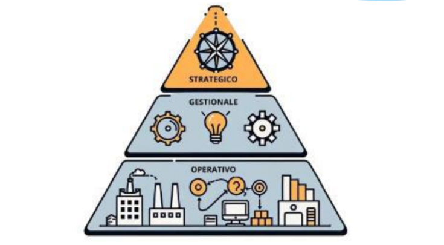

📊 SISTEMA INFORMATIVO
È l’insieme delle attività, dei processi, delle risorse tecnologiche e delle persone coinvolte nella gestione dell’informazione aziendale. Include la raccolta, elaborazione, archiviazione, trasmissione e presentazione dei dati.
- Processo: tutte le attività per gestire il ciclo di vita delle risorse.
- Risorsa: tutto ciò che l’azienda usa per raggiungere i suoi obiettivi.
⚙️ Attività Principali
- Acquisizione dei dati
- Elaborazione per ottenere informazioni
- Archiviazione
- Trasmissione
- Presentazione
💻 SISTEMA INFORMATICO
È l’insieme degli strumenti informatici (hardware, software, persone) che ricevono dati in input, li elaborano e forniscono informazioni in output per supportare la gestione aziendale.
✅ Vantaggi
- Ricerca e memorizzazione rapide
- Aggiornamento in tempo reale
- Condivisione dati tramite reti e database
- Grande capacità di archiviazione
- Meno errori grazie alla standardizzazione
- Aumento dell’efficienza
⚠️ Svantaggi
- Continui cambiamenti tecnologici
- Dipendenza dalla corrente elettrica
- Costi elevati di acquisto, aggiornamento, sicurezza e formazione
🧠 Supporto alle Decisioni
I sistemi informativi moderni devono essere in grado di prendere decisioni rapide. I sistemi di Business Intelligence trasformano dati in informazioni utili per il management.
🔺 PIRAMIDE DI ANTHONY
Modello gerarchico dei sistemi informativi che distingue due tipi principali:
- Operazionale: supporta l’attività quotidiana (OLTP)
- Informazionale: supporta i decisori (OLAP)

🧩 ATTIVITÀ AZIENDALI
📦 OPERATIVE
Gestione operazioni quotidiane come ordini, magazzino, fatturazione. Supportate dai sistemi OLTP (Online Transaction Processing).
📈 TATTICHE
Gestione risorse, programmazione e controllo dei risultati (es. budget, produzione). Eseguite dalle direzioni funzionali.
🎯 STRATEGICHE
Definizione della mission, obiettivi e strategie aziendali. Svolte dallo staff dirigenziale con l’uso di dati sintetici e grafici.
📊 LIVELLO GESTIONALE
Le decisioni aziendali richiedono dati affidabili. Maggiore è l’impatto della decisione, maggiore è la sintesi richiesta nei dati. Le informazioni si ottengono da:
- Raccolta → selezione dati rilevanti
- Selezione → eliminazione errori
- Classificazione → suddivisione per caratteristiche
- Archiviazione → per futura consultazione
- Elaborazione → tramite operazioni logico-matematiche
📚 TIPOLOGIE DI INFORMAZIONI
- Qualitative: descrivono fenomeni
- Quantitative: rappresentano dati numerici
- Soggettive: dipendono dall’interpretazione
🎯 Requisiti delle Informazioni
- Tempestive
- Comprensibili
- Concise
- Complete
- Pertinenti
🖥️ STRUMENTI INFORMATICI
I principali strumenti sono:
- EDP: Electronic Data Processing
- DSS: Decision Support System
- MIS: Management Information System
📦 MIS (gestione operativa e logistica)
- MRP, MRP II, SCM, ERP
- KMS (Knowledge Management System)
- CAD, CAE, CAM
📊 DSS (supporto decisionale)
- CRM (gestione relazioni clienti)
- ESS (Executive Support System)
🧮 EDP (attività operative)
- TPS: sistemi per vendite, marketing, produzione, finanza, risorse umane